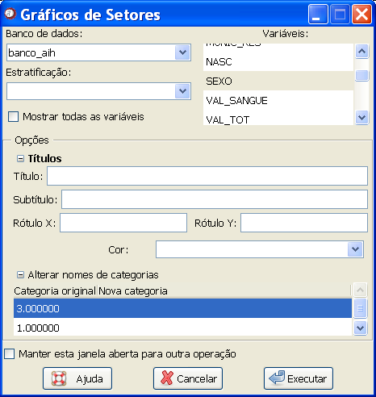
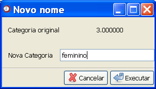

Gráfico
de setores
Gráfico
de setores
O
gráfico de setores, também conhecido como
gráfico de “pizza” é utilizado para representar o valor percentual de
cada
categoria de uma variável, comparada com a soma de todas as categorias.
Nesse
caso, para a construção do gráfico é usada a frequência relativa.
Algumas situações onde é indicada a utilização desse gráfico:
- Se desejar plotar apenas uma série de dados;
- Se nehum dos valores a representar for negativo;
- Se as categorias não tiverem valores muito pequenos ou nulos.
Vale lembrar também que não é aconselhável a utilização desse gráfico para variáveis com mais de sete categorias.
Para acessar essa janela, o usuário deverá ter seguido o seguinte caminho: Gráficos

Figura 1. Janela "Gráfico de setores".
Figura 1. Janela "Gráfico de setores".
O primeiro passo é selecionar o banco de dados onde está
a variável que se deseja descrever. Para isso, é
necessário que o banco já tenha sido aberto (detalhes
sobre como abrir dados
ou importar dados via ODBC).
Em seguida, as variáveis numéricas aparecerão disponíveis na coluna "Selecione as variáveis". O usuário deverá selecionar uma ou mais variáveis.
Um item opcional da janela é a variável de estratificação. Quando o banco de dados é selecionado, as variáveis que podem ser utilizadas como fatores de estratificação aparecerão no campo "Variável de estratificação". É permitida a escolha de apenas uma variável de estratificação. Nesse caso, será construído um gráfico para cada estrato de cada variável selecionada.
Caso a janela seja utilizada para gerar o gráfico de setores para uma única variável (estratificada ou não) é possível alterar os nomes dos níveis que serão exibidos no gráfico. Com um duplo clique em cada categoria, a janela apresentada na Figura 2 será aberta. Nessa janela, indique o nome, ou número para a nova categoria. Repita esse procedimento até completar todas as categorias. Contudo, esta alteração não será aplicada no banco de dados, isto é, o banco permanecerá com os mesmos nomes dos níveis.
Em seguida, as variáveis numéricas aparecerão disponíveis na coluna "Selecione as variáveis". O usuário deverá selecionar uma ou mais variáveis.
Um item opcional da janela é a variável de estratificação. Quando o banco de dados é selecionado, as variáveis que podem ser utilizadas como fatores de estratificação aparecerão no campo "Variável de estratificação". É permitida a escolha de apenas uma variável de estratificação. Nesse caso, será construído um gráfico para cada estrato de cada variável selecionada.
Caso a janela seja utilizada para gerar o gráfico de setores para uma única variável (estratificada ou não) é possível alterar os nomes dos níveis que serão exibidos no gráfico. Com um duplo clique em cada categoria, a janela apresentada na Figura 2 será aberta. Nessa janela, indique o nome, ou número para a nova categoria. Repita esse procedimento até completar todas as categorias. Contudo, esta alteração não será aplicada no banco de dados, isto é, o banco permanecerá com os mesmos nomes dos níveis.

Figura 2. Janela auxiliar para renomeação das categorias.
Figura 2. Janela auxiliar para renomeação das categorias.
Depois de selecionar todas as
opções desejadas, basta clicar em "Executar". Para construir sucessivos
gráficos usando essa janela, marque a opção
"Manter essa janela aberta para outra operação". Com isso, o resultado
desejado aparecerá na janela de gráficos do Epi-R, mas a janela atual
não será fechada, evitando o retrabalho de
acessá-la.